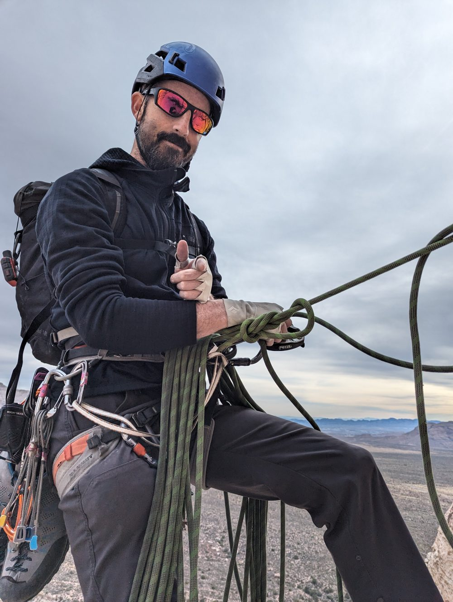
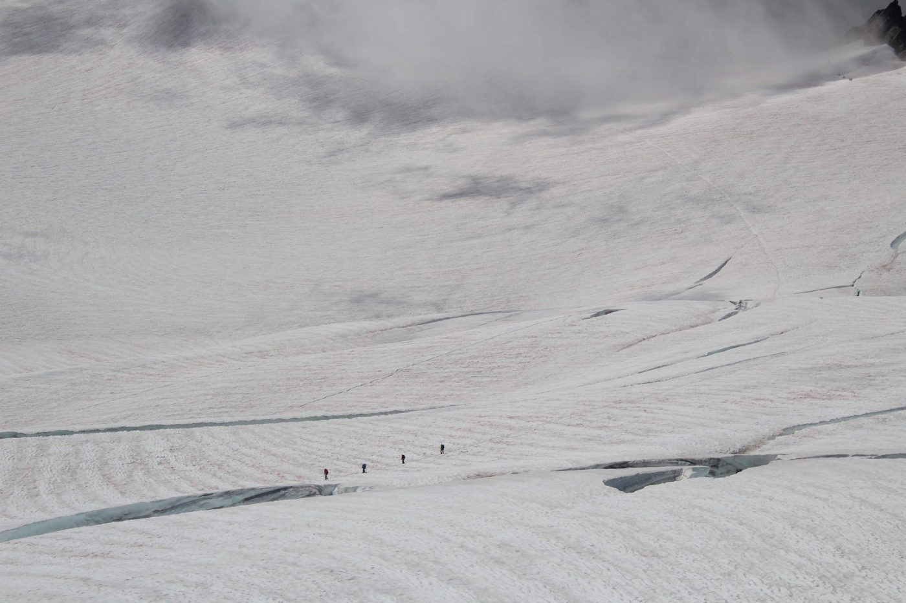
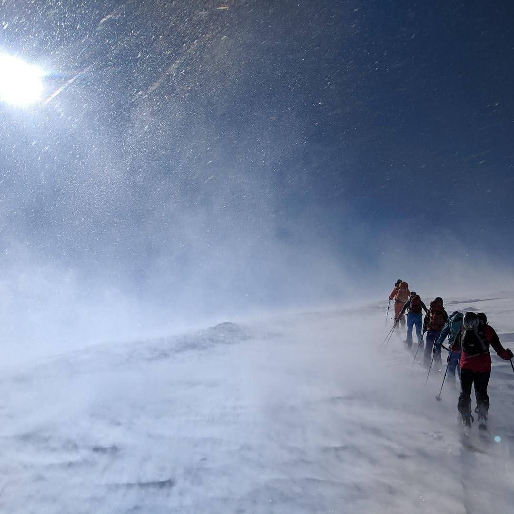

Outdoor Athlete
Rock Climber

Climbing is a core part of who I am, and I do a lot of it. It's demanding on the body, but the harder part is usually mental. Fear and doubt show up on any route that matters to you, and a lot of the sport is staying clear-headed enough to make the next move anyway.
It's a social sport, too. On a rope you trust another person with your safety, and they trust you with theirs. That trust builds quickly, and it's one of the things I value about it.
Mountaineer

Mountaineering started for me on Mount Baker, and most of it since has been in the US. Glacier travel is slow, careful work: you're roped to your team, watching for crevasses and weather, and the plan has to change when conditions do.
I spent one season guiding on Baker, part time. It was a different way to be on the mountain where I'd started, with other people's goals and safety to think about alongside my own.
Backcountry Skier

Backcountry skiing is mostly about going up. You climb on skis with skins on the bottoms, often for hours, and the run down is a small part of the day. All the way up you're reading the terrain and the snow, and the group keeps deciding whether the slope you're aiming for is a good idea today.
Everyone carries avalanche rescue gear and knows how to use it, and the decisions about where to go and when to turn around get made together. I like that about it: the day only works if the whole group is paying attention.
Skiing is also what I've traveled the most for, including trips to other countries.